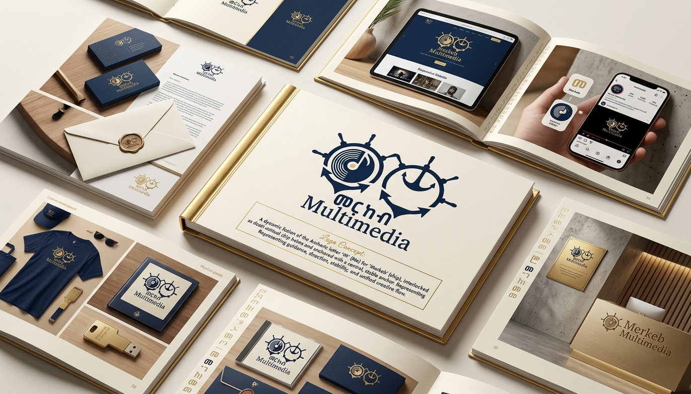
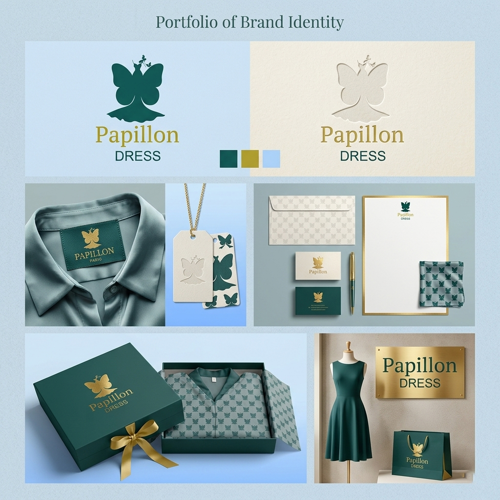
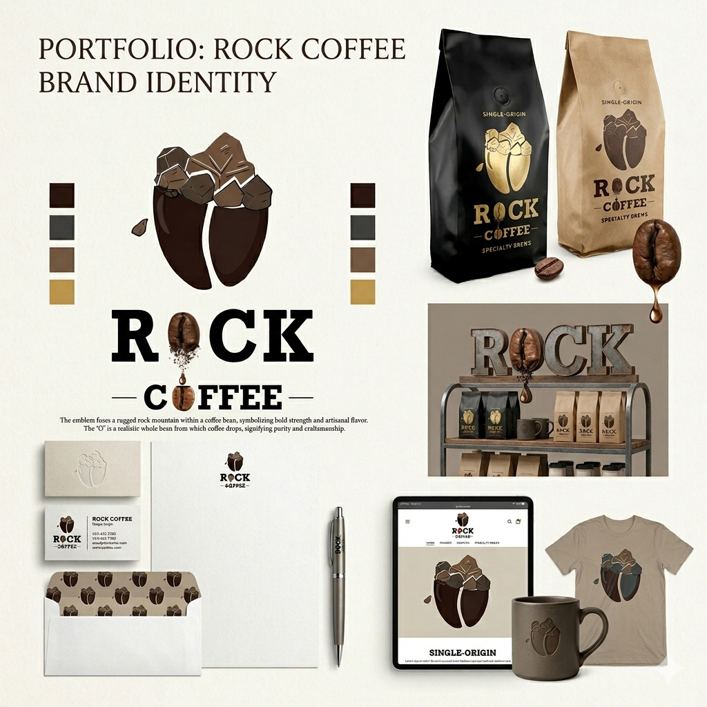

Graphic & Brand Designer — Addis Ababa
Mihret Erkihun
I design posters that hold a room, brand systems that hold together, and digital visuals that work across screens and feeds — one clean visual language across every format.
Real projects
A selection of poster and branding work from the portfolio, built with the actual designs shown below.



Three disciplines
Each one feeds the others — print thinking sharpens layout on screen; interface logic tightens a poster grid.
Poster & Print
Large-format posters, event campaigns and editorial layouts built to read instantly, from festival walls to social feeds.
Brand Identity
Logo systems, colour and type guidelines, and the small rules that keep a brand recognisable everywhere it shows up.
UI / UX Design
Figma product design for websites and mobile apps — wireframes through to polished, developer-ready interfaces.
Mihret Erkihun
Mihret Erkihun is a graphic and UI/UX designer working across print and digital — from festival posters and brand identities to Figma product design for websites and mobile apps.
The throughline across all three is the same: reduce until only the necessary marks remain, then make sure those marks are placed with intent — a headline, a grid, a tap target.